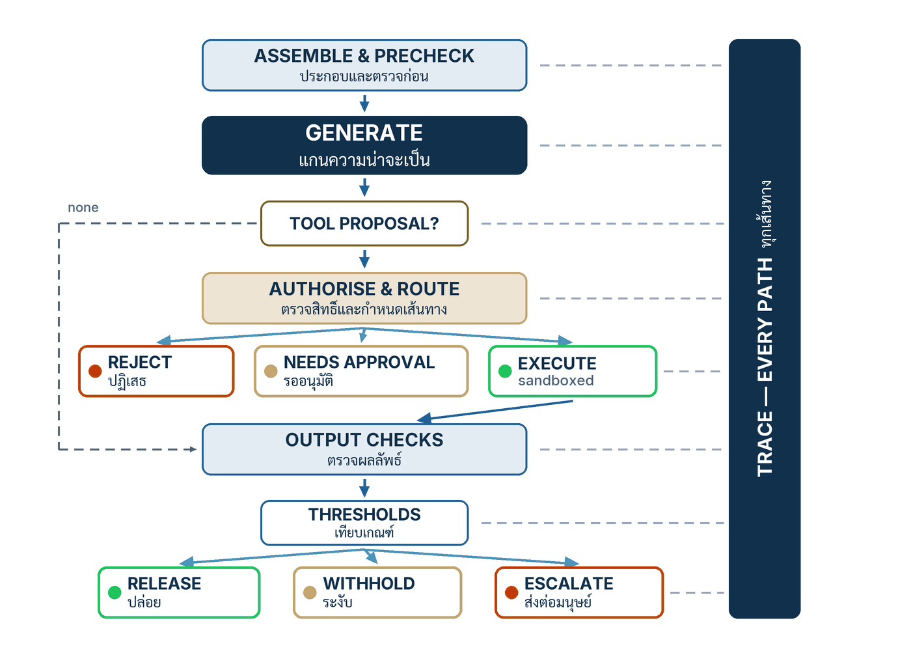

ในบทความนี้
- สี่คำกริยา Specify → Constrain → Generate → Verify — วงจรพัฒนาพฤติกรรมที่วิ่งคู่กับ edit→compile→run→debug และข้อจำกัดที่เปเปอร์ประกาศเอง
- ลูปควบคุมอ้างอิงหนึ่งฟังก์ชัน — เดิน Listing 1.1 ทีละท่อน จาก begin_trace ถึง log_trace ที่ทุกเส้นทางต้องผ่าน
- ลงมือทำ 7 ขั้น — จาก golden set ถึง finally แต่ละขั้นได้โค้ดจริงของน้องครามหนึ่งท่อน
- โค้ดเต็มของน้องคราม — guard.py, gate.py และ loop.py ต่อสายเข้า refund() ราวเก้าสิบบรรทัด ไม่มี framework
- Validation check — เจ็ดคำถามผ่าน/ไม่ผ่าน ทุกข้อตอบด้วย artifact ไม่ใช่คำคุณศัพท์
- ก้าวต่อไป — ลูปบอกว่าบังคับที่ไหน แต่ยังไม่บอกว่าสัญญาอะไร นั่นคืองานของตอนถัดไป
In this post
- The four verbs Specify → Constrain → Generate → Verify — a behavioural-development loop running beside edit→compile→run→debug, and the paper's own demotion of it
- The reference control loop, one function — Listing 1.1 stage by stage, from begin_trace to the log_trace that every path must pass
- The seven steps — from the golden set to finally, each step delivering one real chunk of the Nong Kram code
- The full KramKraft code — guard.py, gate.py and loop.py wired to refund(), about ninety lines, framework-free
- Validation check — seven pass/fail questions, every one answered with an artifact, not an adjective
- The road ahead — the loop says where enforcement happens, not yet what it promises; that is the next post's job
🤔 ทีมของคุณเชื่อโค้ดของตัวเองได้ เพราะวงจร edit → compile → run → debug หมุนอยู่ทุกวัน — แล้ววันที่พฤติกรรมของระบบออกมาจากโมเดลที่คุณเปิดเข้าไปแก้ข้างในไม่ได้เลย คุณหมุนวงจรอะไรเพื่อให้เชื่อพฤติกรรมนั้นได้บ้าง?
ตอนที่แล้ว Design for the Fallible Savant จบลงที่ข้อตกลงสำคัญของทั้งซีรีส์: เราออกแบบระบบโดยถือว่าแกนของมันคือ อัจฉริยะที่พลาดเป็น (fallible savant) — แต่งข้อเท็จจริงได้ เก่งไม่สม่ำเสมอ จำอะไรนอก context ไม่ได้ หูเบา และมั่นใจไม่ตรงกับความจริง — และคำตอบเชิงวิศวกรรมคือกรอบการรับประกันรอบแกน ไม่ใช่คำอธิษฐานให้โมเดลเลิกพลาด แต่ตอนที่แล้วยังเป็นแบบแปลน ตอนนี้ถึงเวลาเทปูน: envelope ที่ว่านั้นเขียนเป็นโค้ดหน้าตาอย่างไร ฟังก์ชันไหนเรียกฟังก์ชันไหน และคำขอหนึ่งคำขอของลูกค้าร้านครามคราฟต์เดินผ่านอะไรบ้าง ก่อนคำตอบจะถึงหน้าจอ LINE ของเขา
คำตอบของทั้งบทคือวินัยการเขียนโปรแกรมในบทที่ 5 ของเปเปอร์[1]: วงจร Specify → Constrain → Generate → Verify ที่วิ่งคู่ขนานกับ edit→compile→run→debug และลูปควบคุมอ้างอิงหนึ่งฟังก์ชันที่ทำให้วงจรนั้นเป็นรูปธรรม — ตรวจก่อน generate และปฏิเสธก่อนถึงโมเดล ตรวจสิทธิ์ก่อนเกิดผลจริง ตรวจผลก่อนปล่อย และเขียน trace ทุกเส้นทางรวมทั้งตอนพัง บทนี้เป็นตอนที่โค้ดเยอะที่สุดของซีรีส์โดยตั้งใจ เพราะเราจะเขียน ai_core_operation() ของน้องครามกันจริง ทีละท่อน จนต่อกันครบทั้งลูปราวเก้าสิบบรรทัด — สั้นพอจะอ่านจบในกาแฟแก้วเดียว และนั่นคือประเด็น
1. สี่คำกริยา — วงจรพัฒนาที่วิ่งคู่กับ edit → compile → run → debug
เปเปอร์เสนอวินัยไว้ตรงไปตรงมา: พฤติกรรมที่มาจากโมเดลแช่แข็งบวกบริบทที่ประกอบตอนรัน ต้องพัฒนาด้วยวงจรของมันเอง — Specify ระบุพฤติกรรมด้วยตัวอย่างและเกณฑ์รับ, Constrain จำกัดพื้นที่ก่อนและหลังโมเดล, Generate ให้โมเดลเสนอในขั้นที่ถูกกักบริเวณ, Verify ตัดสินผลด้วยเช็คและ eval — และวงจรนี้ไม่ได้มาแทน edit→compile→run→debug แต่วิ่งคู่กัน เพราะโค้ด 1.0 ของระบบยังอยู่ครบ ยังถือ control flow, interface และตัวกลางทุกตัวที่ทุกอย่างพึ่งพา และยังต้องพัฒนาแบบ 1.0 ต่อไปตามปกติ[1]
การจับคู่จังหวะต่อจังหวะในตารางข้างล่างเป็นการเรียบเรียงของผมเพื่อการสอน — เปเปอร์พูดถึงลูปคู่ขนานโดยไม่ได้จับคู่ทีละคำ — แต่มันช่วยให้เห็นว่าแต่ละจังหวะที่เราคุ้นมือ มีจังหวะฝาแฝดที่ธรรมชาติต่างออกไปตรงไหน
| จังหวะ | ลูป 1.0 — edit→compile→run→debug | ลูปพฤติกรรม — Specify→Constrain→Generate→Verify |
|---|---|---|
| เขียน | แก้ source code ที่กำหนดพฤติกรรมโดยตรง บรรทัดต่อบรรทัด | เขียนสิ่งที่กำหนดพฤติกรรมของยุค 3.0: intent, golden examples และเกณฑ์รับต่อ task — ตัวการสังเคราะห์ถูกมอบให้แกน |
| กันก่อนรัน | compiler และ type checker ปฏิเสธโปรแกรมที่ผิดรูปก่อนได้รันจริง | schema, allow-list, ช่วงพารามิเตอร์ และ pre-generation check ปฏิเสธคำขอที่ผิดรูปก่อนถึงโมเดล |
| ให้เครื่องทำงาน | run — ผลลัพธ์ deterministic ตามโค้ดที่เขียน | generate — sample หนึ่งตัวจากการแจกแจง จึงต้องกักไว้เป็นขั้นเดียวที่ไม่แตะอะไรเลยนอกจากคืนข้อเสนอ |
| ไล่ความผิด | debug — reproduce ด้วย breakpoint และ stack trace แล้วแก้โค้ดตรงจุด | verify — reproduce เป็นเคสประเมิน เพิ่มเข้า golden set แล้วให้เคสนั้นขับตัวชี้วัดถาวร |
Debug กลายเป็น evaluation
ในลูป 1.0 การ debug จบที่การชี้บรรทัดผิดได้ แต่ตอนที่ 2 ของซีรีส์วางลายเซ็นความล้มเหลวของยุค 3.0 ไว้แล้วว่า ความล้มเหลวอาจไม่เกิดซ้ำเมื่อรันใหม่ และการวินิจฉัยต้องใช้ trace ของการเรียกครั้งนั้นทั้งชุด[1] เปเปอร์จึงเปลี่ยนนิยามของการแก้บั๊กทั้งก้อน: reproduce พฤติกรรมผิดให้ได้ก่อน — ดึง context, manifest และผล tool จาก trace ของคำขอที่พัง — แล้วเพิ่มมันเป็นเคสใน ชุดทดสอบทองคำ (golden set) และให้เคสนั้นขับตัวชี้วัด หน่วยของงาน debug จึงไม่ใช่ patch ที่ลบอาการหนึ่งครั้ง แต่เป็นเคสประเมินที่ตรึงพฤติกรรมนั้นไว้ตลอดอายุระบบ — โมเดลเปลี่ยนรุ่นเมื่อไร เคสนี้รันใหม่ทันที
รูปธรรมของน้องคราม: สมมุติว่าลูกค้าถามขอคืนเงินในวันที่ 45 หลังซื้อ แล้วน้องครามตอบว่า "ได้ครับ" ทั้งที่นโยบายร้าน (ค่าในบทเรียนของเรา) ให้คืนภายใน 30 วัน สิ่งที่ทีมทำไม่ใช่แค่แก้ system prompt แล้วลองถามใหม่จนคำตอบดูดี — แต่คือเก็บคำขอนั้นเป็นเคส refund-012 พร้อมคำตอบที่ถูกต้องและ citation ที่ต้องอ้าง เพิ่มเข้า golden set แล้ววัดอัตราผ่านของ task คืนเงินทั้ง slice ตั้งแต่วันนี้ไปจนถึงทุกครั้งที่ pin โมเดลรุ่นใหม่
ชุด artifact ที่ต้องมีวินัยเดียวกับโค้ดขยายออก
ผลที่ตามมาโดยตรงของวงจรนี้คือรายการของที่ต้อง version, review และกันการถดถอย ไม่ได้มีแค่ source code อีกต่อไป เปเปอร์ไล่รายการไว้ชัด[1]:
- Prompts — ข้อความที่ประกาศ intent และกติกาให้โมเดล เปลี่ยนหนึ่งประโยคคือเปลี่ยนโปรแกรม
- Context templates — โครงประกอบบริบทที่ตัดสินว่าโมเดลเห็นอะไร เรียงอย่างไร
- Tool schemas — สัญญาของ system call ยุคใหม่ ที่การ validate ทั้งหมดยึดเป็นหลัก
- Golden datasets — ชุดทดสอบทองคำที่เป็นทั้งสเปกพฤติกรรมและเครื่องกันถดถอย
- Release manifests — บันทึกที่ pin ทุกพจน์ของโปรแกรมไว้ด้วยกันต่อรุ่นปล่อย
- Eval suites — โค้ดของฝั่ง Verify ที่ต้องถูก review เข้มเท่ากับโค้ดฝั่ง production
วินัยแบบนี้ไม่ได้เกิดจากศูนย์ — สาย ML engineering มี rubric อย่าง ML Test Score ที่บังคับให้ทดสอบและ version ข้อมูลกับโมเดลเหมือน production asset มาตั้งแต่ปี 2017[4] สิ่งที่ยุค 3.0 เพิ่มคือ artifact ตระกูลใหม่ทั้งแถว (prompt, template, schema, manifest) ที่กำหนดพฤติกรรมโดยไม่ใช่ทั้งโค้ดและไม่ใช่ weights
💡 มุมมองของผม: จงปฏิบัติต่อ golden set เหมือน bug tracker ของทีม — บั๊กพฤติกรรมที่ยังไม่ถูกแปลงเป็นเคสทองคำ ยังไม่ถูกแก้ มันแค่เงียบไป และจะกลับมาเงียบ ๆ ในโมเดลรุ่นถัดไปตอนที่ไม่มีใครเฝ้าอยู่
เปเปอร์ demote วงจรของตัวเอง — และนั่นคือจุดที่ต้องจำให้แม่น
บทที่ 6 ของเปเปอร์ทำสิ่งที่ผมอยากให้ผู้เขียน framework ทุกคนทำ: มันลดตำแหน่งวงจรของตัวเองอย่างเปิดเผย วงจรสี่คำกริยาเป็น development workflow เท่านั้น — มันจัดลำดับกิจกรรมประจำวันของทีม แต่ไม่ได้สถาปนาคุณสมบัติใดของระบบ และไม่ใช่ "สัญญา" ที่ระบบให้กับใคร[1] เหตุผลเห็นได้จากตัวอย่างเดียว: ทีมที่ทำครบทั้งสี่คำกริยาอย่างขยันขันแข็ง แต่มีสคริปต์ admin หนึ่งตัวเรียก refund() ตรงโดยไม่ผ่าน guard — ทีมนั้นมีกระบวนการครบและมีการรับประกันเป็นศูนย์
2. ลูปควบคุมอ้างอิง — เดิน Listing 1.1 ทีละท่อน
ทั้งบทที่ 5 ของเปเปอร์ย่อลงเหลือฟังก์ชันเดียว — เปเปอร์เรียกมันว่า "AI-core function" — และโครงสร้างของฟังก์ชันนี้คือตัววินัยเอง: ไม่มีเส้นทางไหนถึงโมเดลโดยไม่ผ่าน precheck ไม่มีผลจริงเกิดโดยไม่ผ่าน guard ไม่มีการปล่อยโดยไม่ผ่าน threshold และไม่มีทางออกใดที่ไม่เขียน trace[1] หัวข้อนี้เดินตาม Listing 1.1 ทีละท่อน ให้เห็นว่าทำไมแต่ละบรรทัดถึงอยู่ตรงนั้น
{kind=link}

โครงเต็มเป็น pseudocode ที่ถอดตามลิสติงของเปเปอร์ — ชื่อฟังก์ชันหลักตามเปเปอร์ทุกตัว ส่วนตัวย่อเล็กน้อยเป็นของผมเพื่อให้อ่านบนจอแคบได้:
function ai_core_operation(request):
trace = begin_trace(request, release_manifest) # เปิด trace ก่อนทำงานใด ๆ
state = initialise_state(request)
try:
loop:
context = assemble_and_record(request, state, trace)
pre = evaluate_pre_generation(request, context)
if not pre.ok: # บังคับจริง ไม่ใช่แค่บันทึกไว้
return reject(request) # ออกก่อนถึงแกนโมเดล
proposal = model.generate(context) # จุดเดียวที่เรียกโมเดล
record_candidate(trace, proposal)
if proposal.has_tool_calls:
for call in proposal.tool_calls:
auth = execution_guard.authorise_validate(
call, request, state, policy)
route = route_effect(call, auth, risk_policy)
if route == REJECT:
result = rejected(auth.reason)
elif route == NEEDS_APPROVAL:
result = wait_for_human_approval(call)
else:
result = sandbox.invoke_transactionally(call)
record_tool(trace, call, route, result)
state = incorporate(state, call, result)
continue # ประกอบบริบทใหม่ แล้วตรวจใหม่ทั้งชุด
break # ไม่มี tool call แล้ว: candidate คือคำตอบ
checks = evaluate_output_dimensions(proposal, context)
verdicts = apply_thresholds(checks)
route = output_route(checks, verdicts, risk_policy)
if route != RELEASE:
return withhold_repair_or_escalate(route, request)
return execute_route(RELEASE, proposal)
finally:
log_trace(trace) # ทุกเส้นทาง รวมทั้งตอนพังก่อนถึงโมเดล — เปิด trace แล้วตรวจแบบมีอำนาจตัดจบ
บรรทัดแรกเปิด ร่องรอยการตัดสินใจ (decision trace) โดยผูก request เข้ากับ บันทึกกำกับรุ่นปล่อย (release manifest) ตั้งแต่ยังไม่มีอะไรเกิดขึ้น เพราะทุก event ที่ตามมาต้องตอบได้เสมอว่าเกิดบนโปรแกรมรุ่นไหน — ตอนที่ 4 ของซีรีส์วางหลักนี้ไว้แล้ว: เปลี่ยนพจน์ใดของสมการ (1) ก็คือเปลี่ยนโปรแกรม trace ที่ไม่รู้รุ่นของโปรแกรมจึงเป็นแค่ log จากนั้น assemble_and_record ประกอบบริบทและบันทึกสิ่งที่ประกอบได้จริงลง trace ก่อนถึงจุดที่เปเปอร์ลงเสียงหนักที่สุดของทั้งลิสติง: pre-generation check ต้อง enforced, not logged — เช็คที่ตกต้อง return ออกจากฟังก์ชันก่อน model.generate ไม่ใช่จดใส่ log แล้วเดินหน้าต่อ[1]
ผลพลอยได้ที่ทีมมักมองข้าม: เส้นทาง reject เป็นเส้นทางที่ deterministic ที่สุด เร็วที่สุด และถูกที่สุดของระบบ — ไม่มีค่า token ไม่มีความแปรปรวน เครื่องมือตระกูล programmable rails อย่าง NeMo Guardrails ทำให้เลเยอร์เช็คแบบนี้ประกาศเป็น config ได้[2] แต่สาระของบทนี้ไม่ใช่ตัวเครื่องมือ — มันคือตำแหน่งกับอำนาจ: เช็คต้องอยู่ก่อนแกน และต้องมีอำนาจจบคำขอได้เอง
พรมแดนของผลกระทบ — สามทางออกของ tool call
ถ้า candidate เสนอ tool call ลูปจะไม่ทำตามข้อเสนอนั้นตรง ๆ เด็ดขาด เพราะตอนที่ 3 ของซีรีส์ชี้รอยต่อนี้ไว้แล้ว: tool call คือ system call ที่ถูกขอมาเป็นภาษาธรรมชาติ การอนุญาตจึงต้องบังคับนอกโมเดลเสมอ[1] execution_guard.authorise_validate ตรวจ call เทียบกับ request, state และ policy แล้ว route_effect แตกผลเป็นสามทางออกที่เป็นโค้ดคนละสายชัดเจน:
- REJECT — ค่าปริยายของทุกอย่างที่พิสูจน์ตัวเองไม่ได้ (deny by default) ผล tool กลายเป็นคำปฏิเสธที่โมเดลได้เห็นในรอบถัดไป
- NEEDS_APPROVAL —
wait_for_human_approval: call ที่ valid แต่ใหญ่หรือย้อนกลับไม่ได้ ต้องมีมนุษย์ตัดสินใจก่อนเกิดผลจริง - EXECUTE —
sandbox.invoke_transactionally: เกิดทั้งหมดหรือไม่เกิดเลย ไม่มีสถานะครึ่ง ๆ กลาง ๆ ให้ต้องเดา
ผลถูกบันทึกลง trace แล้ว incorporate เข้า state จากนั้นลูปกลับไปประกอบบริบทใหม่และตรวจใหม่ทั้งชุด — สังเกตว่ารอบสองไม่ได้รับความไว้ใจสะสมจากรอบแรกเลย precheck เดิมรันอีกครั้งทุกรอบ เพราะบริบทที่เพิ่งรับผล tool เข้ามาคือบริบทใหม่ที่ยังไม่เคยถูกตรวจ
ฝั่งขาออก — threshold, เส้นทางไม่ปล่อย และ finally ที่สำคัญที่สุด
เมื่อไม่มี tool call เหลือ candidate ตัวสุดท้ายเข้าด่านขาออก: evaluate_output_dimensions วัดรายมิติ apply_thresholds เทียบเกณฑ์ที่ประกาศไว้ แล้ว output_route ตัดสินเส้นทาง ถ้าไม่ใช่ RELEASE ระบบเลือกได้ระหว่าง withhold, repair หรือ escalate — ทั้งสามเป็นเส้นทางที่ออกแบบไว้ มี pattern การตอบของตัวเอง ไม่ใช่ exception ที่หลุดขึ้นไปให้ middleware จัดการ และปิดท้ายด้วยบรรทัดที่ผมถือว่าศักดิ์สิทธิ์ที่สุดของลิสติง: finally: log_trace — ทุกเส้นทาง รวมทั้งเส้นทางที่โค้ดพังกลางคัน ต้องทิ้ง trace ไว้เสมอ[1]
และนี่คือการแบ่งชนิดที่ลูปทำให้เห็นตลอดทาง ซึ่งจะเป็นกระดูกสันหลังของสัญญาในตอนถัดไป: เช็คเชิงโครงสร้าง — schema, allow-list, ช่วงพารามิเตอร์, membership ของ citation — บังคับ การรับประกันเชิงโครงสร้าง (structural guarantee) ที่เป็นขอบเขตแน่นอนบนทุกการรัน ส่วนคำตัดสินเชิงความหมาย — faithfulness, ความเกี่ยวข้อง, ความสุภาพ — เป็น ค่าประเมินเชิงความหมาย (semantic estimate) ที่พลาดได้เสมอในอัตราหนึ่ง[1] โครงของลูปรับประกันว่าอะไรเกิดที่ไหนได้บ้าง — มันไม่เคยรับประกันว่าเนื้อหาดี
3. ลงมือทำ 7 ขั้น
เจ็ดขั้นข้างล่างเปลี่ยน pseudocode เป็นโค้ด Python จริงของน้องคราม ทีละท่อน ทุกท่อนคือของจริงที่หัวข้อ 4 จะประกอบเข้าด้วยกันเป็นสามไฟล์ ตัวเลขทุกตัวที่เห็น — เพดานอนุมัติ 1,500 บาท, เกณฑ์ faithfulness 0.80, หน้าต่างคืนสินค้า 30 วัน — เป็นค่าของบทเรียนที่ผมตั้งขึ้นเพื่อให้ตัวอย่างรันได้ ไม่ใช่ตัวเลขที่เปเปอร์วัดหรือแนะนำ
ขั้นที่ 1 — Specify: เขียน golden examples กับเกณฑ์รับต่อ task
เริ่มจากประกาศพฤติกรรมที่ต้องการเป็นเคส ไม่ใช่เป็นความเรียง: ต่อ task หนึ่ง เลือกตัวอย่างจริงที่ครอบคลุมทั้งกรณีที่ควรทำและกรณีที่ควรปฏิเสธ พร้อมเกณฑ์รับที่ตัดสินผ่าน/ไม่ผ่านได้ด้วยเครื่อง เหตุผลมาจากหัวใจของยุค 3.0: สเปกพฤติกรรมคือ intent บวก exemplars และ golden set คือที่เดียวที่สเปกนั้นตรวจย้อนได้[1] สำหรับ task คืนเงินของน้องคราม ผมเริ่มที่สองเคสหัวขบวน — เคสที่ต้องเรียก tool และเคสที่ต้องปฏิเสธพร้อมอ้างนโยบาย:
# golden/refund.py — ชุดทดสอบทองคำของ task คืนเงิน (ตัวเลขของบทเรียน)
GOLDEN_REFUND = [
{"id": "refund-007",
"request": "order KK-1042: mug arrived cracked, asks for a refund",
"expect": {"tool": {"name": "refund", "order_id": "KK-1042"},
"cite": ["policy/returns#damaged"]}},
{"id": "refund-012",
"request": "order KK-0980: changed mind on day 45, asks for a refund",
"expect": {"tool": None, # เกินหน้าต่างคืนสินค้า 30 วันของร้าน
"cite": ["policy/returns#window"]}},
]
ACCEPTANCE = {"tool_exact": 1.00, # tool call ต้องตรงเป๊ะทุกเคส
"cite_only_retrieved": 1.00,
"answer_pass_rate": 0.90} # เกณฑ์ของบทเรียน แยกตาม sliceขั้นที่ 2 — Constrain: ประกาศ schema, allow-list, ช่วงพารามิเตอร์ และ precheck
ข้อจำกัดทุกตัวต้องประกาศล่วงหน้าเป็นโครงสร้าง ไม่ใช่ขอร้องไว้ใน prompt — ประโยคใน context เป็นคำแนะนำต่อโมเดล ไม่ใช่ข้อจำกัดต่อระบบ ขั้นนี้คือจังหวะ "compile" ของลูปพฤติกรรม: สิ่งที่ผิดรูปต้องตกตั้งแต่ยังไม่ได้รัน และ precheck ที่ตกต้องมีอำนาจจบคำขอเองก่อนถึงแกน[1]:
# kramkraft/constraints.py — สิ่งที่ประกาศล่วงหน้า ไม่ใช่สิ่งที่ขอร้องโมเดล
ALLOWED_TOOLS = {"refund"} # tool มีผลจริงตัวเดียวของน้องคราม
TOOL_SCHEMA = {"refund": {
"order_id": r"^KK-\d{4}$",
"amount": "int, 1..order_total_thb",
"reason": "str, 1..200 chars",
}}
MAX_CONTEXT_TOKENS = 6000
def evaluate_pre_generation(request, context):
if request.channel not in {"web", "line"}:
return Check(False, "unknown channel")
if not context.passages:
return Check(False, "no policy passage retrieved")
if context.token_estimate > MAX_CONTEXT_TOKENS:
return Check(False, "context overflow")
return Check(True, "ok")ขั้นที่ 3 — Generate: กักการเรียกโมเดลไว้เป็นขั้นเดียวที่แตะอะไรไม่ได้เลย
การเรียกโมเดลต้องเป็นขั้นที่ถูกกักบริเวณสนิท: รับ context เข้า คืน "ข้อเสนอ" ออก และระหว่างนั้นแตะอะไรไม่ได้เลย — ไม่อ่านฐานข้อมูล ไม่ยิงเครือข่าย ไม่เรียก tool เหตุผลตรงไปตรงมา: ทุกการรับประกันของลูปตั้งอยู่บนข้อเท็จจริงว่าผลจริงทุกตัวต้องเดินผ่านตัวกลางในขั้นถัดไป ถ้าการเรียกโมเดลมี side effect ได้เอง ทุกอย่างที่เหลือคือละคร ในโค้ดของน้องคราม ประตูนี้มีบานเดียวทั้งระบบ:
# kramkraft/model_port.py — ประตูเดียวในระบบที่คุยกับ M_v
class ModelPort:
def __init__(self, client):
self._client = client # โมเดล hosted แช่แข็ง pin รุ่นไว้
def generate(self, context):
raw = self._client.complete(context.prompt)
return Proposal(text=raw.text,
tool_calls=parse_tool_calls(raw))
# คืน "ข้อเสนอ" เท่านั้น — ไม่แตะ store, เครือข่าย หรือ tool ใดขั้นที่ 4 — Mediate: ทุกผลจริงผ่านตัวกลางก่อนเกิด และค่าปริยายคือปฏิเสธ
นี่คือขั้นที่แบก guarantee ของทั้งระบบ: ข้อเสนอ tool ทุกตัวต้องถูก authorise และ validate นอกโมเดล ก่อนเกิดผลจริง โดยยึดหลัก การผ่านตัวกลางครบทุกเส้นทาง (complete mediation) — ไม่มีเส้นทางหลังบ้าน ไม่มีข้อยกเว้นสำหรับ admin — และ deny by default: call ที่พิสูจน์ตัวเองไม่ได้ครบทุกข้อคือ call ที่ถูกปฏิเสธ ส่วน call ที่ valid แต่ใหญ่หรือย้อนกลับไม่ได้ต้องหยุดรอมนุษย์[1] — สำหรับน้องคราม refund ย้อนกลับไม่ได้ตั้งแต่วินาทีที่ payment processor รับคำสั่ง:
# ในลูป: ข้อเสนอยังไม่ใช่ผลจริง จนกว่าจะผ่านตัวกลาง
auth = guard.authorise_validate(call, request)
route = route_effect(call, auth, risk_policy)
if route == "EXECUTE":
result = sandbox.invoke_transactionally(call) # ทั้งหมดหรือไม่เลย
elif route == "NEEDS_APPROVAL":
result = wait_for_human_approval(call, request) # มนุษย์ตัดสิน
else:
result = ToolResult.rejected(auth.why) # ค่าปริยายคือปฏิเสธ
def route_effect(call, auth, risk_policy):
if not auth.ok:
return "REJECT"
if call.args["amount"] > risk_policy.approval_threshold_thb:
return "NEEDS_APPROVAL" # ใหญ่และย้อนกลับไม่ได้: ต้องมีมนุษย์
return "EXECUTE"ขั้นที่ 5 — Verify: เช็คโครงสร้างเป็นของแข็ง คำตัดสินความหมายเป็นค่าประเมิน
ด่านขาออกมีสองชนิดที่ห้ามเขียนปนบรรทัดกัน ชนิดแรกตัดสินแบบ deterministic ได้: payload ต้อง parse ผ่าน schema และ citation ทุกตัวต้องเป็นสมาชิกของ passage ที่ retrieve มาจริง — นี่คือของแข็ง ชนิดที่สองคือคำถามอย่าง "คำตอบตรงเนื้อนโยบายไหม" ซึ่งตอบได้ด้วยตัวประเมินที่พลาดเป็นเท่านั้น ตัวตรวจตระกูลโมเดลอย่าง Llama Guard มีจริงและมีประโยชน์ แต่โดยธรรมชาติมันคือตัวจำแนกที่มีอัตราพลาดของตัวเอง[3] — และห้าม route ด้วยความมั่นใจที่โมเดลรายงานเอง เพราะตอนที่แล้ววางไว้ชัดว่า calibration ของมันเชื่อไม่ได้ ต้องใช้การประเมินอิสระ[1]:
# ท่อนตรวจขาออก — ของแข็งแยกบรรทัดจากค่าประเมิน
checks, payload = output_checks(proposal, context) # โครงสร้าง: ของแข็ง
verdicts = {"faithfulness": deps.judge(payload, context)} # ค่าประเมิน
def output_checks(proposal, context):
payload = try_parse_json(proposal.text)
schema_ok = payload is not None and \
{"reply", "policy_refs"} <= set(payload)
retrieved = {p.ref for p in context.passages}
attribution_ok = schema_ok and bool(payload["policy_refs"]) and \
set(payload["policy_refs"]) <= retrieved
return {"schema": schema_ok, "attribution": attribution_ok}, payloadขั้นที่ 6 — Route: ให้ release / withhold / repair / escalate เป็นโค้ดชั้นหนึ่ง
เส้นทางที่ไม่ปล่อยต้องมีศักดิ์เท่าเส้นทางที่ปล่อย: เขียนเป็นฟังก์ชันของตัวเอง มีคำตอบ fallback ของตัวเอง มีคิวมนุษย์ของตัวเอง — เพราะการวางเส้นทางความล้มเหลวเป็นส่วนหนึ่งของดีไซน์คือสิ่งที่แยกระบบวิศวกรรมออกจากเดโม กติกาการ route ก็สะท้อนขั้นที่ 5 ตรง ๆ: เช็คโครงสร้างตกคือจบ ไม่มีข้อยกเว้น ส่วนค่าประเมินต่ำแปลว่าหลักฐานอ่อน จึงส่งให้มนุษย์อ่าน ไม่ใช่ทิ้ง:
def output_route(checks, verdicts, risk_policy):
if not all(checks.values()): # เช็คโครงสร้างตก: ไม่มีข้อยกเว้น
return "REPAIR" if checks["schema"] is False else "WITHHOLD"
if verdicts["faithfulness"] < risk_policy.faithfulness_min:
return "ESCALATE" # หลักฐานอ่อน: มนุษย์อ่านก่อน
return "RELEASE"
def execute_route(route, payload, request, deps):
if route == "RELEASE": return Reply.send(payload)
if route == "REPAIR": return retry_once_then_withhold(request, deps)
if route == "WITHHOLD": return Reply.fallback(request)
return deps.escalate(request) # ESCALATE: เข้าคิวมนุษย์ขั้นที่ 7 — Trace: เขียนทุกอย่างใน finally และให้การปล่อยล้มถ้า trace ล้ม
ขั้นสุดท้ายสั้นที่สุดแต่ต่อรองไม่ได้: การเขียน trace อยู่ใน finally เพื่อให้ทุกเส้นทาง — ปล่อย ปฏิเสธ ส่งต่อ หรือพังด้วย exception — ทิ้งหลักฐานไว้เสมอ และต้องกลับทิศความสัมพันธ์ให้ถูก: ไม่ใช่ "ปล่อยแล้วค่อยพยายามบันทึก" แต่เป็น "บันทึกไม่สำเร็จ = ไม่มีการปล่อย" นี่คือ ล้มแบบปิด (fail-closed) ที่รอยต่อสุดท้ายของระบบ[1]:
def ai_core_operation(request, deps):
trace = Trace(request, deps.manifest) # เปิดก่อนทำงานใด ๆ
try:
... # ทั้งลูปจากขั้นที่ 2-6
finally:
trace.write(deps.trace_path) # ทุกเส้นทาง รวมทั้ง exception
# Trace.write ตั้งใจให้ raise เมื่อเขียนไม่สำเร็จ — exception ใน finally
# จะกลบค่า return เดิม: ไม่มีคำตอบใดถูกปล่อยโดยไม่มี trace ของมัน4. โค้ดเต็มของน้องคราม — สามไฟล์ต่อสายเข้า refund()
artifact ของตอนนี้คือสามไฟล์ที่ประกอบท่อนทั้งเจ็ดเข้าด้วยกัน: kramkraft/guard.py, kramkraft/gate.py และ kramkraft/loop.py รวมกันราวเก้าสิบบรรทัด ไม่พึ่ง framework ใด — คลาส Reply, Auth, Check, ToolResult เป็น dataclass ตรงไปตรงมาที่ผมละไว้ให้ผู้อ่านเขียนเอง เริ่มจากตัวกลางที่แบกการรับประกันทั้งหมด:
# kramkraft/guard.py — execution guard ของ tool คืนเงิน
# ตัวเลขทุกตัวเป็นค่าของบทเรียน ไม่ใช่ค่าที่เปเปอร์แนะนำ
ALLOWED_TOOLS = {"refund"}
class ExecutionGuard:
def __init__(self, order_store, refund_ledger):
self.orders = order_store # สถานะคำสั่งซื้อจากระบบจริง
self.ledger = refund_ledger # หนึ่ง order คืนเงินได้ครั้งเดียว
def authorise_validate(self, call, request):
if call.name not in ALLOWED_TOOLS:
return Auth(False, "tool not in allow-list")
order = self.orders.get(call.args.get("order_id"))
if order is None or order.customer_id != request.customer_id:
return Auth(False, "no such order for this customer")
amount = call.args.get("amount", 0)
if not (0 < amount <= order.total_thb):
return Auth(False, "amount outside 0..order_total")
if self.ledger.has(call.args["order_id"]):
return Auth(False, "duplicate refund for this order")
return Auth(True, "within declared bounds")
def route_effect(call, auth, risk_policy):
if not auth.ok:
return "REJECT" # deny by default
if call.args["amount"] > risk_policy.approval_threshold_thb:
return "NEEDS_APPROVAL" # ย้อนกลับไม่ได้และใหญ่: มนุษย์ตัดสิน
return "EXECUTE"สังเกตว่า guard อ่านสถานะจริงจาก order store เสมอ — ความเป็นเจ้าของ order, ยอดรวม, ประวัติการคืน — ไม่เคยเชื่อคำเล่าในข้อความของโมเดลแม้แต่ค่าเดียว และ ledger ทำหน้าที่ idempotency key แบบบ้าน ๆ ที่สุด: หนึ่ง order คืนเงินได้ครั้งเดียวตลอดชีวิต ต่อให้โมเดลเสนอซ้ำ ลูกค้ากดซ้ำ หรือระบบ retry เอง
# kramkraft/gate.py — output gate กับ trace writer
import json
def try_parse_json(text):
try:
return json.loads(text)
except ValueError:
return None
def output_checks(proposal, context):
payload = try_parse_json(proposal.text)
schema_ok = payload is not None and \
{"reply", "policy_refs"} <= set(payload)
retrieved = {p.ref for p in context.passages}
attribution_ok = schema_ok and bool(payload["policy_refs"]) and \
set(payload["policy_refs"]) <= retrieved
return {"schema": schema_ok, "attribution": attribution_ok}, payload
class Trace:
def __init__(self, request, manifest):
self.events = [{"begin": request.id, "manifest": manifest.version}]
def record(self, kind, **data):
self.events.append({kind: data})
def write(self, path): # เขียนไม่สำเร็จ = raise: ล้มแบบปิด
with open(path, "a", encoding="utf-8") as f:
f.write(json.dumps(self.events, ensure_ascii=False) + "\n")จุดที่อยากให้หยุดดูคือ attribution_ok: การบังคับว่า citation ทุกตัวต้องเป็นสมาชิกของชุด passage ที่ retrieve จริง เป็นเช็คเชิงโครงสร้าง — set membership ตัดสินแบบ deterministic ได้ร้อยเปอร์เซ็นต์ — ส่วนคำถามว่าเนื้อคำตอบตรงกับ passage เหล่านั้นไหม เป็นงานของ judge ในลูปหลัก ซึ่งเป็นค่าประเมิน สองบรรทัดนี้อยู่คนละฝั่งของเส้นแบ่งที่ทั้งซีรีส์ยืนอยู่
# kramkraft/loop.py — ฟังก์ชัน AI-core ของน้องคราม
MAX_TURNS = 4
RISK_POLICY = RiskPolicy(approval_threshold_thb=1500, # ค่าของบทเรียน
faithfulness_min=0.80)
def ai_core_operation(request, deps):
trace = Trace(request, deps.manifest)
state = deps.init_state(request)
proposal = context = None
try:
for _turn in range(MAX_TURNS):
context = deps.assemble(request, state)
trace.record("context", digest=context.digest)
pre = evaluate_pre_generation(request, context)
trace.record("precheck", ok=pre.ok, why=pre.why)
if not pre.ok:
return Reply.refuse(request) # ออกก่อนถึงแกน
proposal = deps.model.generate(context)
trace.record("candidate", digest=proposal.digest)
if not proposal.tool_calls:
break # ไม่มีข้อเสนอผลจริงแล้ว
for call in proposal.tool_calls:
auth = deps.guard.authorise_validate(call, request)
route = route_effect(call, auth, deps.risk_policy)
trace.record("guard", tool=call.name, route=route,
why=auth.why)
if route == "EXECUTE":
result = deps.sandbox.invoke_transactionally(call)
elif route == "NEEDS_APPROVAL":
result = deps.wait_for_human_approval(call, request)
else:
result = ToolResult.rejected(auth.why)
trace.record("tool_result", ok=result.ok)
state = state.incorporate(call, result)
checks, payload = output_checks(proposal, context)
verdicts = {"faithfulness": deps.judge(payload, context)}
route = output_route(checks, verdicts, deps.risk_policy)
trace.record("route", route=route, checks=checks,
verdicts=verdicts)
return execute_route(route, payload, request, deps)
finally:
trace.write(deps.trace_path) # ทุกเส้นทางสามรายละเอียดที่ตั้งใจ: MAX_TURNS ตัดลูปไม่รู้จบตั้งแต่โครงสร้าง ไม่ต้องรอใครสังเกต; ทุก return — refuse, fallback, escalate หรือปล่อยจริง — เดินผ่าน finally เหมือนกันหมด; และ execute_route คืนค่า ไม่ได้ส่งข้อความเอง — การส่งจริงเกิดหลังฟังก์ชันคืนสำเร็จ ดังนั้นถ้า trace.write ล้ม exception จะกลบค่าที่กำลังจะคืน และไม่มีอะไรถึงลูกค้า: เส้นทางปล่อยล้มไปพร้อมกับ trace ตามที่ขั้นที่ 7 ต้องการทุกประการ
💡 มุมมองของผม: โค้ดลูปนี้จงใจให้น่าเบื่อ — ไม่มี meta-programming ไม่มี framework ไม่มี abstraction เกินหนึ่งชั้น — เพราะความน่าเบื่อคือคุณสมบัติด้านความปลอดภัย เส้นทางที่เราจะกล้ายืนยันว่า "ผลจริงทุกตัวผ่านตัวกลาง" ต้องเป็นเส้นทางที่ไล่อ่านด้วยตาแล้วเห็นครบในหน้าเดียว ความฉลาดทั้งหมดถูกผลักออกไปอยู่ใน artifact ที่ version ได้ — schema, threshold, golden set — ที่เดียวที่มันควรอยู่
5. Validation check — ลูปของคุณบังคับจริง หรือแค่บันทึกไว้เฉย ๆ
กติกาเดิมของซีรีส์: ทุกข้อตอบด้วย artifact ที่ชี้ได้ เปิดดูได้ แนบใน review ได้ — ไม่ใช่คำคุณศัพท์ ตารางนี้ใช้กับแอปของคุณเอง ไม่ใช่ของน้องคราม ข้อไหนตอบไม่ได้ ไม่ได้แปลว่าระบบแย่ แปลว่ายังไม่มีหลักฐาน — และข้อ 1 สำคัญที่สุด เพราะการรับประกันทุกแถวของตอนถัดไปตั้งอยู่บนมัน
| ข้อ | คำถาม (ผ่าน/ไม่ผ่าน) | artifact ที่พิสูจน์ |
|---|---|---|
| 1 | ไม่มี call site ใดในระบบเรียก tool มีผลจริงได้โดยไม่ผ่าน guard — เส้นทางผลจริงมีเส้นเดียวจริงหรือไม่ | ผลของ grep -rn "refund(" . ทั้ง repo แนบใน review note — call site เดียวคือ sandbox.invoke_transactionally ภายใน loop.py |
| 2 | คำขอที่ตก precheck ไปไม่ถึงโมเดลจริงหรือไม่ | บรรทัด trace ของเคสทดสอบที่ผิดรูป: มี event precheck ok=false และไม่มี event candidate ตามหลังเลย |
| 3 | ข้อเสนอ refund ที่เกินเพดานอนุมัติไป NEEDS_APPROVAL ทุกครั้งหรือไม่ | unit test ของ route_effect ที่ amount = เพดาน + 1 บวก trace จริงที่ route=NEEDS_APPROVAL ปรากฏก่อน tool_result |
| 4 | คำสั่งคืนเงินซ้ำบน order เดิมถูกปฏิเสธเสมอหรือไม่ | เทสต์รัน ai_core_operation สองครั้งด้วยคำขอเดียวกัน บวก post-state ของ refund ledger ที่มีรายการเดียวเท่านั้น |
| 5 | output ที่ parse ไม่ผ่าน schema มีทางถึงลูกค้าหรือไม่ | ผลรัน golden set ชุด malformed ทั้งชุด: ทุกเคสจบที่ REPAIR หรือ WITHHOLD ใน trace ไม่มีเคสใดจบ RELEASE |
| 6 | ถ้าเขียน trace ไม่สำเร็จ ระบบยังปล่อยคำตอบอยู่หรือไม่ | fault-injection test ที่ตั้ง trace path เป็น read-only: ทั้งคำขอล้ม ไม่มีคำตอบออก — เก็บผลไว้ในชุดเทสต์ของ harness |
| 7 | ทุกคำขอจบด้วย route ปลายทางเดียวใน trace หรือไม่ | สคริปต์นับ event route ต่อ request จากไฟล์ trace ของการรัน golden set ทั้งชุด — ได้ 1 ต่อคำขอพอดีทุกคำขอ |
ถ้าจะเลือกทำข้อเดียวสัปดาห์นี้ ทำข้อ 1: เปิด terminal แล้ว grep หา call site ของ tool มีผลจริงทุกตัวในระบบของคุณ การได้เห็นด้วยตาว่ามีกี่เส้นทาง — และมักมีมากกว่าที่คิด เพราะสคริปต์ migration, endpoint ภายใน และปุ่ม admin ไม่เคยนับตัวเองเป็น "ระบบ AI" — คือหลักฐานชิ้นแรกที่สัญญาในตอนถัดไปจะเรียกหา
6. ก้าวต่อไป
บทนี้เปลี่ยนวินัยของบทที่ 5 ในเปเปอร์ให้เป็นของจับต้องได้สองชิ้น: วงจร Specify → Constrain → Generate → Verify ที่จัดจังหวะงานประจำวันของทีม และ ai_core_operation() ที่ทำให้จังหวะนั้นกลายเป็นโครงสร้าง — precheck ที่มีอำนาจจบคำขอก่อนถึงโมเดล, guard ที่ยืนขวางระหว่างข้อเสนอกับผลจริง, threshold ที่ยืนขวางระหว่าง candidate กับลูกค้า และ trace ที่เขียนในทุกเส้นทางแม้เส้นทางที่พัง ทั้งหมดนี้คือเครื่องจักร — และน้องครามตอนนี้มีมันครบแล้วในสามไฟล์
สิ่งที่บทนี้จงใจยังไม่ตอบ คือคำถามที่ห้องประชุมความเสี่ยงจะถามทันทีที่เห็นโค้ด: แล้วเครื่องจักรทั้งหมดนี้สัญญาอะไรได้บ้าง แถวไหนเป็นการรับประกันจริงภายใต้สมมติฐานอะไร แถวไหนเป็นเพียงค่าประเมินพร้อมอัตราพลาดสองทิศทาง หลักฐานอะไรพิสูจน์ ใครเป็นเจ้าของ และเกิดอะไรขึ้นเมื่อผิดเงื่อนไข — คำตอบมีชื่อเรียกของมันเอง: สัญญาการรับประกันเชิงระบบ (assurance contract) และมันคือเนื้อหาทั้งตอนของตอนถัดไป
🎯 สิ่งสำคัญที่ต้องจำ
- Specify → Constrain → Generate → Verify = วงจรพัฒนาพฤติกรรมที่วิ่งคู่กับ edit→compile→run→debug — จัดลำดับกิจกรรม แต่ไม่สถาปนาคุณสมบัติใด และไม่ใช่สัญญา (เปเปอร์ demote เองในบทที่ 6)
- Debug กลายเป็น evaluation = ทำพฤติกรรมผิดให้เกิดซ้ำ เพิ่มเป็นเคสในชุดทดสอบทองคำ แล้วให้เคสขับตัวชี้วัด — บั๊กที่ยังไม่เป็นเคส ยังไม่ถูกแก้ มันแค่เงียบไป
- ลูปควบคุมอ้างอิง = precheck บังคับก่อนโมเดล · guard ก่อนผลจริง · threshold ก่อนปล่อย · trace ทุกเส้นทาง — โครงสร้างรับประกันว่าอะไรเกิดที่ไหนได้ ไม่ใช่ว่าเนื้อหาดี
- Deny by default = ทุก tool call เริ่มต้นที่ถูกปฏิเสธ แล้วต้องพิสูจน์ตัวผ่าน allow-list, schema, ช่วงพารามิเตอร์, ความเป็นเจ้าของ order และ idempotency — ที่เหลือใหญ่พอต้องรอมนุษย์
- โครงสร้างกับความหมายแยกบรรทัดกัน = schema parse กับ citation membership เป็นการรับประกันเชิงโครงสร้าง ส่วน faithfulness เป็นค่าประเมินเชิงความหมายที่พลาดได้ — อย่าเขียนสองอย่างนี้ปนกัน
- ล้มแบบปิดที่ trace = เส้นทางปล่อยต้องล้มถ้าเขียน trace ไม่สำเร็จ — ระบบที่ตรวจย้อนได้คือระบบที่ยอมไม่ตอบ ดีกว่าตอบโดยไม่ทิ้งหลักฐาน
อ้างอิง
ตรวจสอบทุกแหล่งเมื่อ 8 กันยายน 2026 (เวลาประเทศไทย) · ป้ายหลักฐานสี่แบบ: Law ตัวบทกฎหมายหรือประกาศทางการ · Standard มาตรฐานหรือกรอบทางการที่เผยแพร่แล้ว · Study งานวิจัยหรือสัญญาณภาคสนาม · Synthesis การสังเคราะห์ของผู้เขียนหรือแหล่งที่ไม่ใช่งานวิจัย
- Synthesis Anirach Mingkhwan. Engineering AI-Core Systems: A Reference Architecture and Assurance Contract for Software 3.0 — CreativeLAB, FITM, KMUTNB, 2026. เอกสารที่ผู้เขียนจัดหาให้ ยังไม่ตีพิมพ์ ไม่มี URL สาธารณะ จึงไม่มีลิงก์และไม่มีวันเข้าถึง. รองรับ: วงจร Specify → Constrain → Generate → Verify และฐานะลูปคู่ขนานของมัน (บทที่ 5) โครงสร้างของลูปควบคุมอ้างอิง Listing 1.1 ครบทุกท่อน หลัก enforced-not-logged ของ pre-generation check สามทางออก REJECT / NEEDS_APPROVAL / invoke_transactionally การเขียน trace ใน finally บนทุกเส้นทาง หลัก debugging-becomes-evaluation การขยายชุด artifact ที่ต้อง version การแยกการรับประกันเชิงโครงสร้างจากค่าประเมินเชิงความหมาย และการ demote วงจรสี่คำกริยาในบทที่ 6 ว่าเป็น development workflow เท่านั้น
- Study Rebedea, T., Dinu, R., Sreedhar, M., et al. NeMo Guardrails: A Toolkit for Controllable and Safe LLM Applications with Programmable Rails — EMNLP System Demonstrations, 2023. อ้างโดยไม่มีลิงก์ตามรายการแหล่งที่ตรวจแล้วของซีรีส์. รองรับ: ข้อสังเกตว่าเลเยอร์ตรวจก่อนและหลังการ generate แบบ programmable rails เป็นแนวปฏิบัติที่มีเครื่องมือจริงรองรับ — อ้างเป็นตัวอย่างของหมวดเครื่องมือเท่านั้น ไม่ได้อ้างว่าเครื่องมือให้การรับประกันใดกับลูปของบทนี้
- Study Inan, H., Upasani, K., Chi, J., et al. Llama Guard: LLM-based Input-Output Safeguard for Human-AI Conversations — arXiv:2312.06674, 2023. arxiv.org — เข้าถึง 2026-09-08. รองรับ: ข้อเท็จจริงว่าตัวตรวจขาเข้า-ขาออกที่สร้างจากโมเดลมีอยู่จริงในสนาม และโดยธรรมชาติเป็นตัวจำแนกที่มีอัตราพลาดของตัวเอง — ใช้ประกอบขั้นที่ 5 ว่าคำตัดสินจากตัวตรวจตระกูลโมเดลต้องนับเป็นค่าประเมิน ไม่ใช่โครงสร้าง
- Study Breck, E., Cai, S., Nielsen, E., Salib, M., Sculley, D. The ML Test Score: A Rubric for ML Production Readiness and Technical Debt Reduction — IEEE Big Data 2017. doi.org — เข้าถึง 2026-09-08. รองรับ: วินัยของการปฏิบัติต่อข้อมูล โมเดล และโครงพื้นฐานเป็น artifact ที่ต้องทดสอบและ version เหมือน production asset ซึ่งมีมาก่อนยุค 3.0 — ใช้รองรับหัวข้อ 1 เรื่องการขยายชุด artifact โดยไม่ได้อ้างว่า rubric ครอบคลุมระบบที่มีโมเดลภาษาเป็นแกน
🤔 Your team trusts its own code because the edit → compile → run → debug loop turns every day — so on the day the system's behaviour comes out of a model you cannot open up and edit, what loop do you turn to trust that behaviour?
The previous post, Design for the Fallible Savant, ended on the series' central bargain: we design the system on the assumption that its core is a fallible savant — it asserts plausible falsehoods, its competence is jagged, it remembers nothing outside the context, it is gullible, and its confidence does not track its accuracy — and the engineering answer is an assurance envelope around the core, not a prayer that the model stops failing. But that post was still the blueprint. Now we pour the concrete: what does that envelope look like as code, which function calls which, and what does a single KramKraft customer request pass through before the answer reaches their LINE screen?
The whole post's answer is the coding discipline of the paper's Section 5[1]: the Specify → Constrain → Generate → Verify loop that runs in parallel with edit→compile→run→debug, and one reference control loop that makes the discipline concrete — check before generating and reject before the model, authorise before any real effect, verify before releasing, and write a trace on every path including the one where the code breaks. This is deliberately the most code-heavy post of the series, because we will write Nong Kram's ai_core_operation() for real, one chunk at a time, until the whole loop of roughly ninety lines is assembled — short enough to read over one cup of coffee, and that is the point.
1. Four Verbs — the Development Loop Running Beside edit → compile → run → debug
The paper states the discipline plainly: behaviour that comes from a frozen model plus runtime-assembled context has to be developed with a loop of its own — Specify the behaviour with examples and acceptance criteria, Constrain the space before and after the model, Generate with the model proposing inside a quarantined stage, Verify the result with checks and evals — and this loop does not replace edit→compile→run→debug but runs beside it, because the system's 1.0 code is still all there, still holds the control flow, the interfaces and every mediator that everything depends on, and still gets developed the 1.0 way[1].
The rhythm-by-rhythm pairing in the table below is my own rendering for teaching — the paper speaks of a parallel loop without pairing the words one to one — but it makes visible where each rhythm we know by hand has a twin whose nature is different.
| Rhythm | The 1.0 loop — edit→compile→run→debug | The behavioural loop — Specify→Constrain→Generate→Verify |
|---|---|---|
| Write | Edit the source code that determines behaviour directly, line by line | Write what determines 3.0 behaviour: intent, golden examples and per-task acceptance criteria — the synthesis itself is delegated to the core |
| Refuse before running | The compiler and the type checker refuse a malformed program before it ever runs | Schemas, allow-lists, parameter ranges and pre-generation checks refuse a malformed request before it reaches the model |
| Let the machine work | Run — the outcome is deterministic in the code that was written | Generate — a single sample from a distribution, so it must be quarantined as the one stage that touches nothing and only returns a proposal |
| Chase the fault | Debug — reproduce with breakpoints and a stack trace, then fix the code at the spot | Verify — reproduce as an evaluation case, add it to the golden set, and let that case drive a metric permanently |
Debugging becomes evaluation
In the 1.0 loop, debugging ends when you can point at the wrong line. But post #2 of this series already laid out the 3.0 failure signature: the failure may not recur on a re-run, and diagnosis needs the full trace of that one invocation[1]. So the paper redefines the whole job: reproduce the wrong behaviour first — pull the context, the manifest and the tool results from the failing request's trace — then add it as a case to the golden set and let that case drive a metric. The unit of debugging work is therefore not a patch that erases one symptom, but an evaluation case that pins that behaviour down for the life of the system — the moment the model changes version, this case runs again.
Concretely, for Nong Kram: suppose a customer asks for a refund on day 45 after purchase and Nong Kram answers "of course", even though the shop's policy (our tutorial's value) allows returns within 30 days. What the team does is not merely tweak the system prompt and re-ask until the answer looks right — it captures that request as case refund-012, with the correct answer and the citation that must be given, adds it to the golden set, and measures the refund task's pass rate across the whole slice, from today until every future re-pin of the model.
The artifact set that needs code-grade discipline expands
The direct consequence of this loop is that the list of things requiring versioning, review and regression protection no longer stops at source code. The paper enumerates it explicitly[1]:
- Prompts — the text that declares intent and rules to the model; changing one sentence changes the program
- Context templates — the assembly skeleton that decides what the model sees and in what order
- Tool schemas — the contracts of the new era's system calls, which all validation anchors on
- Golden datasets — the golden set that is at once the behaviour spec and the regression barrier
- Release manifests — the record that pins every term of the program together per release
- Eval suites — the code of the Verify side, which must be reviewed as strictly as production code
This discipline did not appear from nowhere — ML engineering has had rubrics like the ML Test Score forcing data and models to be tested and versioned like production assets since 2017[4]. What the 3.0 era adds is a whole new family of artifacts — prompts, templates, schemas, manifests — that determine behaviour while being neither code nor weights.
💡 My view: treat the golden set as the team's bug tracker — a behavioural bug that has not yet been converted into a golden case is not fixed, it has merely gone quiet, and it will come back quietly in the next model version at the moment nobody is watching.
The paper demotes its own loop — and that is the point to remember
Section 6 of the paper does what I wish every framework author did: it openly demotes its own loop. The four-verb cycle is a development workflow only — it orders the team's daily activity, but it establishes no property of the system, and it is not a "contract" the system gives anyone[1]. One example shows why: a team that diligently performs all four verbs, but has one admin script calling refund() directly without the guard — that team has a complete process and zero guarantees.
2. The Reference Control Loop — Listing 1.1, Stage by Stage
The paper's whole Section 5 condenses into a single function — the paper calls it the "AI-core function" — and the structure of that function is the discipline itself: no path reaches the model without the prechecks, no real effect happens without the guard, nothing is released without passing the thresholds, and no exit exists that does not write a trace[1]. This section walks Listing 1.1 stage by stage, so that every line's position explains itself.
The full skeleton, as pseudocode transcribed from the paper's listing — every principal function name is the paper's; the minor abbreviations are mine, to keep it readable on a narrow screen:
function ai_core_operation(request):
trace = begin_trace(request, release_manifest) # open the trace before any work
state = initialise_state(request)
try:
loop:
context = assemble_and_record(request, state, trace)
pre = evaluate_pre_generation(request, context)
if not pre.ok: # enforced, not merely logged
return reject(request) # exits before the model core
proposal = model.generate(context) # the only line that calls the model
record_candidate(trace, proposal)
if proposal.has_tool_calls:
for call in proposal.tool_calls:
auth = execution_guard.authorise_validate(
call, request, state, policy)
route = route_effect(call, auth, risk_policy)
if route == REJECT:
result = rejected(auth.reason)
elif route == NEEDS_APPROVAL:
result = wait_for_human_approval(call)
else:
result = sandbox.invoke_transactionally(call)
record_tool(trace, call, route, result)
state = incorporate(state, call, result)
continue # re-assemble the context, re-run every check
break # no tool call left: the candidate is the answer
checks = evaluate_output_dimensions(proposal, context)
verdicts = apply_thresholds(checks)
route = output_route(checks, verdicts, risk_policy)
if route != RELEASE:
return withhold_repair_or_escalate(route, request)
return execute_route(RELEASE, proposal)
finally:
log_trace(trace) # every path, including failureBefore the model — open the trace, then check with the power to end the request
The first line opens the decision trace by binding the request to the release manifest while nothing has happened yet, because every event that follows must always be able to answer which version of the program it happened on — post #4 of this series laid down the principle: changing any term of equation (1) changes the program, so a trace that does not know the program's version is merely a log. Then assemble_and_record builds the context and records what was actually assembled, before the point where the paper raises its voice loudest in the whole listing: pre-generation checks must be enforced, not logged — a failing check must return out of the function before model.generate, not note the problem in a log and carry on[1].
A side benefit teams tend to overlook: the reject path is the most deterministic, fastest and cheapest path in the system — no token cost, no variance. Programmable-rails tooling like NeMo Guardrails lets this check layer be declared as configuration[2], but the substance of this post is not the tool — it is position and authority: the check must sit before the core, and it must have the power to end the request on its own.
The effect boundary — three exits for a tool call
If the candidate proposes a tool call, the loop never simply follows the proposal, because post #3 of this series already marked this seam: a tool call is a system call that arrives as a natural-language request, so authorisation must always be enforced outside the model[1]. execution_guard.authorise_validate checks the call against the request, the state and the policy, and route_effect splits the outcome into three exits that are visibly separate code paths:
- REJECT — the default for everything that cannot prove itself (deny by default); the tool result becomes a refusal the model gets to see on the next turn
- NEEDS_APPROVAL —
wait_for_human_approval: a call that is valid but large or irreversible must have a human decide before any real effect - EXECUTE —
sandbox.invoke_transactionally: it happens entirely or not at all, with no half-state left to guess about
The result is recorded into the trace and incorporated into the state, and then the loop goes back to re-assemble the context and re-run every check — notice that the second turn inherits no accumulated trust from the first: the same prechecks run again on every turn, because a context that has just absorbed a tool result is a new context that has never been checked.
The output side — thresholds, the non-release paths, and the finally that matters most
When no tool calls remain, the final candidate enters the output gate: evaluate_output_dimensions measures per dimension, apply_thresholds compares against the declared bars, and output_route decides the path. If it is not RELEASE, the system chooses between withhold, repair and escalate — all three are designed paths with response patterns of their own, not exceptions floating up for middleware to handle. And it closes with the line I consider the most sacred in the listing: finally: log_trace — every path, including the one where the code breaks halfway, must always leave a trace behind[1].
And this is the type division the loop makes visible all the way through, which will become the backbone of the contract in the next post: structural checks — schemas, allow-lists, parameter ranges, citation membership — enforce a structural guarantee, a bounded invariant on every run; semantic verdicts — faithfulness, relevance, tone — remain a semantic estimate that can always be wrong at some rate[1]. The shape of the loop guarantees where things can happen — it never guarantees that the content is good.
3. The Seven Steps
The seven steps below turn the pseudocode into Nong Kram's real Python, one chunk at a time. Every chunk is the real thing that section 4 will assemble into three files. Every number you see — the 1,500-baht approval threshold, the 0.80 faithfulness bar, the 30-day return window — is a tutorial value I set so the example runs; none of them is a number the paper measured or recommends.
Step 1 — Specify: write golden examples and per-task acceptance criteria
Start by declaring the desired behaviour as cases, not as an essay: for each task, pick real examples covering both what should be done and what should be refused, with acceptance criteria a machine can judge pass/fail. The reason comes from the heart of the 3.0 era: the behaviour spec is intent plus exemplars, and the golden set is the one place that spec can be re-checked[1]. For Nong Kram's refund task I start with the two head-of-line cases — one that must call the tool, and one that must refuse while citing policy:
# golden/refund.py — the golden set for the refund task (tutorial numbers)
GOLDEN_REFUND = [
{"id": "refund-007",
"request": "order KK-1042: mug arrived cracked, asks for a refund",
"expect": {"tool": {"name": "refund", "order_id": "KK-1042"},
"cite": ["policy/returns#damaged"]}},
{"id": "refund-012",
"request": "order KK-0980: changed mind on day 45, asks for a refund",
"expect": {"tool": None, # past the shop's 30-day return window
"cite": ["policy/returns#window"]}},
]
ACCEPTANCE = {"tool_exact": 1.00, # tool calls must match exactly
"cite_only_retrieved": 1.00,
"answer_pass_rate": 0.90} # tutorial threshold, per sliceStep 2 — Constrain: declare schemas, allow-lists, parameter ranges and prechecks
Every constraint must be declared up front as structure, not pleaded for in the prompt — a sentence in the context is advice to the model, not a constraint on the system. This step is the behavioural loop's "compile" beat: what is malformed must fall before anything runs, and a failing precheck must have the power to end the request itself, before the core[1]:
# kramkraft/constraints.py — declared up front, not pleaded for in the prompt
ALLOWED_TOOLS = {"refund"} # Nong Kram's only effectful tool
TOOL_SCHEMA = {"refund": {
"order_id": r"^KK-\d{4}$",
"amount": "int, 1..order_total_thb",
"reason": "str, 1..200 chars",
}}
MAX_CONTEXT_TOKENS = 6000
def evaluate_pre_generation(request, context):
if request.channel not in {"web", "line"}:
return Check(False, "unknown channel")
if not context.passages:
return Check(False, "no policy passage retrieved")
if context.token_estimate > MAX_CONTEXT_TOKENS:
return Check(False, "context overflow")
return Check(True, "ok")Step 3 — Generate: quarantine the model call as the one stage that touches nothing
The model call must be a fully quarantined stage: context in, a "proposal" out, and in between it touches nothing at all — no database reads, no network, no tools. The reason is blunt: every guarantee in the loop rests on the fact that every real effect must pass the mediator in the next step; if the model call can have side effects of its own, everything else is theatre. In Nong Kram's code, this doorway has exactly one door in the whole system:
# kramkraft/model_port.py — the one gateway in the system that talks to M_v
class ModelPort:
def __init__(self, client):
self._client = client # frozen hosted model, version pinned
def generate(self, context):
raw = self._client.complete(context.prompt)
return Proposal(text=raw.text,
tool_calls=parse_tool_calls(raw))
# returns a proposal only — touches no store, network, or toolStep 4 — Mediate: every effect passes the mediator before it happens, and the default is refusal
This is the step that carries the whole system's guarantee: every proposed tool call must be authorised and validated outside the model before any real effect, under the principle of complete mediation — no back-door path, no admin exception — and deny by default: a call that cannot prove every requirement is a rejected call, while a call that is valid but large or irreversible must stop and wait for a human[1] — and for Nong Kram, a refund is irreversible from the second the payment processor accepts the instruction:
# in the loop: a proposal is not an effect until it passes the mediator
auth = guard.authorise_validate(call, request)
route = route_effect(call, auth, risk_policy)
if route == "EXECUTE":
result = sandbox.invoke_transactionally(call) # all or nothing
elif route == "NEEDS_APPROVAL":
result = wait_for_human_approval(call, request) # a human decides
else:
result = ToolResult.rejected(auth.why) # the default is refusal
def route_effect(call, auth, risk_policy):
if not auth.ok:
return "REJECT"
if call.args["amount"] > risk_policy.approval_threshold_thb:
return "NEEDS_APPROVAL" # large and irreversible: needs a human
return "EXECUTE"Step 5 — Verify: structural checks are hard, semantic verdicts are estimates
The output gate has two kinds of check that must never share a line. The first kind can be decided deterministically: the payload must parse against the schema, and every citation must be a member of the passages actually retrieved — this is hard. The second kind is a question like "does the answer match the policy text", which only a fallible evaluator can answer. Model-family checkers like Llama Guard exist and are useful, but by nature they are classifiers with error rates of their own[3] — and never route on the confidence the model reports about itself, because the previous post made it plain that its calibration cannot be trusted; use independent evaluation[1]:
# the output-check chunk — hard lines kept separate from estimates
checks, payload = output_checks(proposal, context) # structural: hard
verdicts = {"faithfulness": deps.judge(payload, context)} # an estimate
def output_checks(proposal, context):
payload = try_parse_json(proposal.text)
schema_ok = payload is not None and \
{"reply", "policy_refs"} <= set(payload)
retrieved = {p.ref for p in context.passages}
attribution_ok = schema_ok and bool(payload["policy_refs"]) and \
set(payload["policy_refs"]) <= retrieved
return {"schema": schema_ok, "attribution": attribution_ok}, payloadStep 6 — Route: make release / withhold / repair / escalate first-class code
The paths that do not release must have the same standing as the path that does: written as their own functions, with their own fallback answer and their own human queue — because designing the failure route into the system is what separates engineering from a demo. The routing rule mirrors step 5 exactly: a failed structural check is final, no exceptions; a low estimate means weak evidence, so it goes to a human to read, not to the bin:
def output_route(checks, verdicts, risk_policy):
if not all(checks.values()): # structural check failed: no exceptions
return "REPAIR" if checks["schema"] is False else "WITHHOLD"
if verdicts["faithfulness"] < risk_policy.faithfulness_min:
return "ESCALATE" # weak evidence: a human reads first
return "RELEASE"
def execute_route(route, payload, request, deps):
if route == "RELEASE": return Reply.send(payload)
if route == "REPAIR": return retry_once_then_withhold(request, deps)
if route == "WITHHOLD": return Reply.fallback(request)
return deps.escalate(request) # ESCALATE: into the human queueStep 7 — Trace: write everything in finally, and let the release fail if the trace fails
The last step is the shortest and the least negotiable: the trace write lives in finally so that every path — release, refusal, escalation, or a crash mid-flight — always leaves evidence behind, and the relationship must be inverted the right way round: not "release, then try to record", but "no successful record means no release". This is fail-closed behaviour at the system's final seam[1]:
def ai_core_operation(request, deps):
trace = Trace(request, deps.manifest) # opened before any work
try:
... # the whole loop from steps 2-6
finally:
trace.write(deps.trace_path) # every path, incl. exceptions
# Trace.write deliberately raises when the write fails — an exception in
# finally replaces the pending return: nothing is released without its trace4. The Full KramKraft Code — Three Files Wired to refund()
This post's artifact is the three files that assemble the seven chunks: kramkraft/guard.py, kramkraft/gate.py and kramkraft/loop.py — roughly ninety lines together, depending on no framework. The Reply, Auth, Check and ToolResult classes are straightforward dataclasses I leave to the reader. Start with the mediator that carries all of the guarantees:
# kramkraft/guard.py — the execution guard for the refund tool
# every number here is a tutorial value, not one the paper recommends
ALLOWED_TOOLS = {"refund"}
class ExecutionGuard:
def __init__(self, order_store, refund_ledger):
self.orders = order_store # authoritative order state
self.ledger = refund_ledger # one refund per order, ever
def authorise_validate(self, call, request):
if call.name not in ALLOWED_TOOLS:
return Auth(False, "tool not in allow-list")
order = self.orders.get(call.args.get("order_id"))
if order is None or order.customer_id != request.customer_id:
return Auth(False, "no such order for this customer")
amount = call.args.get("amount", 0)
if not (0 < amount <= order.total_thb):
return Auth(False, "amount outside 0..order_total")
if self.ledger.has(call.args["order_id"]):
return Auth(False, "duplicate refund for this order")
return Auth(True, "within declared bounds")
def route_effect(call, auth, risk_policy):
if not auth.ok:
return "REJECT" # deny by default
if call.args["amount"] > risk_policy.approval_threshold_thb:
return "NEEDS_APPROVAL" # irreversible and large: a human decides
return "EXECUTE"Notice that the guard always reads real state from the order store — order ownership, the total, the refund history — and never trusts a single value narrated in the model's text. And the ledger is the plainest possible idempotency key: one order can be refunded once in its lifetime, no matter whether the model proposes again, the customer taps again, or the system retries on its own.
# kramkraft/gate.py — the output gate and the trace writer
import json
def try_parse_json(text):
try:
return json.loads(text)
except ValueError:
return None
def output_checks(proposal, context):
payload = try_parse_json(proposal.text)
schema_ok = payload is not None and \
{"reply", "policy_refs"} <= set(payload)
retrieved = {p.ref for p in context.passages}
attribution_ok = schema_ok and bool(payload["policy_refs"]) and \
set(payload["policy_refs"]) <= retrieved
return {"schema": schema_ok, "attribution": attribution_ok}, payload
class Trace:
def __init__(self, request, manifest):
self.events = [{"begin": request.id, "manifest": manifest.version}]
def record(self, kind, **data):
self.events.append({kind: data})
def write(self, path): # a failed write raises: fail closed
with open(path, "a", encoding="utf-8") as f:
f.write(json.dumps(self.events, ensure_ascii=False) + "\n")The line worth stopping at is attribution_ok: forcing every citation to be a member of the set of passages actually retrieved is a structural check — set membership is one hundred percent deterministic to decide — while the question of whether the answer's content actually matches those passages belongs to the judge in the main loop, which is an estimate. Those two lines stand on opposite sides of the dividing line the whole series stands on.
# kramkraft/loop.py — Nong Kram's AI-core function
MAX_TURNS = 4
RISK_POLICY = RiskPolicy(approval_threshold_thb=1500, # tutorial values
faithfulness_min=0.80)
def ai_core_operation(request, deps):
trace = Trace(request, deps.manifest)
state = deps.init_state(request)
proposal = context = None
try:
for _turn in range(MAX_TURNS):
context = deps.assemble(request, state)
trace.record("context", digest=context.digest)
pre = evaluate_pre_generation(request, context)
trace.record("precheck", ok=pre.ok, why=pre.why)
if not pre.ok:
return Reply.refuse(request) # exits before the core
proposal = deps.model.generate(context)
trace.record("candidate", digest=proposal.digest)
if not proposal.tool_calls:
break # no effect proposals left
for call in proposal.tool_calls:
auth = deps.guard.authorise_validate(call, request)
route = route_effect(call, auth, deps.risk_policy)
trace.record("guard", tool=call.name, route=route,
why=auth.why)
if route == "EXECUTE":
result = deps.sandbox.invoke_transactionally(call)
elif route == "NEEDS_APPROVAL":
result = deps.wait_for_human_approval(call, request)
else:
result = ToolResult.rejected(auth.why)
trace.record("tool_result", ok=result.ok)
state = state.incorporate(call, result)
checks, payload = output_checks(proposal, context)
verdicts = {"faithfulness": deps.judge(payload, context)}
route = output_route(checks, verdicts, deps.risk_policy)
trace.record("route", route=route, checks=checks,
verdicts=verdicts)
return execute_route(route, payload, request, deps)
finally:
trace.write(deps.trace_path) # every pathThree deliberate details: MAX_TURNS cuts the endless loop off structurally, without waiting for anyone to notice; every return — refuse, fallback, escalate or a genuine release — walks through the same finally; and execute_route returns a value, it does not send the message itself — the actual send happens after the function returns successfully, so if trace.write fails, the exception replaces the value about to be returned and nothing reaches the customer: the release path fails together with its trace, exactly as step 7 requires.
💡 My view: this loop's code is deliberately boring — no meta-programming, no framework, no abstraction beyond one layer — because boringness is a safety property. The path we are going to stand behind with "every real effect passes the mediator" has to be a path a reviewer can read with their eyes and see completely on one page. All of the cleverness has been pushed out into artifacts that can be versioned — the schema, the thresholds, the golden set — the one place it belongs.
5. Validation Check — Does Your Loop Enforce, or Merely Log?
The series' standing rule: every question is answered with an artifact you can point at, open, and attach to a review — not an adjective. This table is for your own app, not Nong Kram. A question you cannot answer does not mean the system is bad; it means the evidence does not exist yet — and question 1 matters most, because every guarantee row in the next post stands on it.
| # | Question (pass/fail) | The artifact that proves it |
|---|---|---|
| 1 | Can no call site in the system reach an effectful tool without the guard — is the effect path genuinely a single path? | The output of grep -rn "refund(" . across the repo, attached to the review note — the only call site is sandbox.invoke_transactionally inside loop.py |
| 2 | Does a request that fails the precheck really never reach the model? | The trace lines of a malformed test case: a precheck ok=false event with no candidate event after it at all |
| 3 | Does a refund proposal above the approval threshold go to NEEDS_APPROVAL every time? | A unit test of route_effect at amount = threshold + 1, plus a real trace where route=NEEDS_APPROVAL appears before any tool_result |
| 4 | Is a duplicate refund on the same order always rejected? | A test running ai_core_operation twice with the same request, plus the refund ledger's post-state holding exactly one entry |
| 5 | Can an output that fails the schema parse ever reach the customer? | A run over the malformed golden-set slice: every case ends at REPAIR or WITHHOLD in the trace, and not one ends at RELEASE |
| 6 | If the trace write fails, does the system still release the answer? | A fault-injection test with the trace path set read-only: the whole request fails and no answer goes out — the result kept in the harness's test suite |
| 7 | Does every request end with exactly one terminal route in the trace? | A script counting route events per request over the trace file of a full golden-set run — exactly 1 per request, every request |
If you do only one of these this week, do question 1: open a terminal and grep for the call sites of every effectful tool in your system. Seeing with your own eyes how many paths there are — and there are usually more than you think, because migration scripts, internal endpoints and admin buttons never count themselves as "the AI system" — is the first piece of evidence the next post's contract will ask for.
6. The Road Ahead
This post turned the discipline of the paper's Section 5 into two tangible things: the Specify → Constrain → Generate → Verify loop that sets the team's daily rhythm, and the ai_core_operation() that turns that rhythm into structure — a precheck with the power to end a request before the model, a guard standing between proposal and effect, thresholds standing between candidate and customer, and a trace written on every path including the one that breaks. All of that is the machine — and Nong Kram now has all of it, in three files.
What this post deliberately does not answer is the question the risk committee will ask the moment they see the code: so what does all this machinery promise? Which rows are genuine guarantees, under which assumptions; which are only estimates with error rates in both directions; what evidence proves each one, who owns it, and what happens on breach — the answer has a name of its own: the assurance contract, and it is the entire subject of the next post.
🎯 Key takeaways
- Specify → Constrain → Generate → Verify = the behavioural-development loop running beside edit→compile→run→debug — it orders activity, but establishes no property and is not a contract (the paper demotes it itself in Section 6)
- Debugging becomes evaluation = reproduce the wrong behaviour, add it as a case to the golden set, and let the case drive a metric — a bug that is not yet a case is not fixed, it has only gone quiet
- The reference control loop = prechecks enforced before the model · the guard before any effect · thresholds before release · a trace on every path — structure guarantees where things can happen, not that the content is good
- Deny by default = every tool call starts out rejected and must prove itself through the allow-list, the schema, the parameter ranges, order ownership and idempotency — and what remains large enough waits for a human
- Structure and semantics on separate lines = schema parsing and citation membership are structural guarantees, while faithfulness is a fallible semantic estimate — never write the two blended together
- Fail closed at the trace = the release path must fail if the trace write fails — an auditable system is one that would rather not answer than answer without leaving evidence
References
All sources checked 8 September 2026 (Thailand time) · four evidence tags: Law statute or official gazette · Standard published formal standard or framework · Study research or field signal · Synthesis author synthesis or non-research source
- Synthesis Anirach Mingkhwan. Engineering AI-Core Systems: A Reference Architecture and Assurance Contract for Software 3.0 — CreativeLAB, FITM, KMUTNB, 2026. Author-provided manuscript, unpublished; no public URL, hence no link and no access date. Supports: the Specify → Constrain → Generate → Verify loop and its standing as a parallel loop (Section 5), the structure of the Listing 1.1 reference control loop in every stage, the enforced-not-logged rule for pre-generation checks, the three exits REJECT / NEEDS_APPROVAL / invoke_transactionally, trace writing in finally on every path, the debugging-becomes-evaluation principle, the expansion of the versioned artifact set, the separation of structural guarantees from semantic estimates, and the Section 6 demotion of the four-verb loop to a development workflow only
- Study Rebedea, T., Dinu, R., Sreedhar, M., et al. NeMo Guardrails: A Toolkit for Controllable and Safe LLM Applications with Programmable Rails — EMNLP System Demonstrations, 2023. Cited without a link, per the series' vetted source list. Supports: the observation that programmable pre- and post-generation check layers are an established engineering practice with real tooling — cited as an example of the tool category only, with no claim that the tool provides any guarantee to this post's loop
- Study Inan, H., Upasani, K., Chi, J., et al. Llama Guard: LLM-based Input-Output Safeguard for Human-AI Conversations — arXiv:2312.06674, 2023. arxiv.org — accessed 2026-09-08. Supports: the fact that model-based input-output safeguards exist in the field and are by nature classifiers with error rates of their own — used in step 5 to argue that verdicts from model-family checkers must count as estimates, not structure
- Study Breck, E., Cai, S., Nielsen, E., Salib, M., Sculley, D. The ML Test Score: A Rubric for ML Production Readiness and Technical Debt Reduction — IEEE Big Data 2017. doi.org — accessed 2026-09-08. Supports: the discipline of treating data, models and infrastructure as artifacts to be tested and versioned like production assets, predating the 3.0 era — used to ground section 1's artifact-set expansion, without claiming the rubric covers systems with a language model at the core